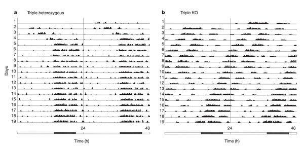

Big data
Aug 1, 2014
Medium data
Aug 1, 2014
http://bedford.io/projects/medium-data/
Data tells a story
Charles Minard and Napoleon's 1812 campaign
{kind=link}
The EPAS1 gene and high-altitude adaptation in Tibetans
Tibet is high
Tibetans are adapted to high altitudes
- ~600,000 people live at 14,800+ ft in elevation, where oxygen is only 60% of sea level
- Among other traits, Tibetans are protected from chronic mountain sickness, exhibiting little increase in hemoglobin concentration at high altitudes
Tibetan EPAS1 is diverged from other populations

Tibetan EPAS1 is diverged from other populations

EPAS1 is transcription factor involved in the body's response to oxygen level
Story was adaptation in Tibetans to high altitude
TibetanEPAS1 derives from Denisovan DNA

Denisovans?
Evolutionary relationships between human species

Extinction of Neanderthals and Denisovans


via XKCD

Geographic circulation of the influenza virus

Edward Tufte
Above all, show the data
A good graphic is honestTo clarify add detail
"To clarify, add detail... Clutter and overload are not attributes of information, they are failures of design. If the information is in chaos, don’t start throwing out information, instead fix the design."– Tufte
Evolution of Conus shells

Greenland rising

Small multiples

Virus migration
Animation

Sequence data

Correlations
Information density
Animating evolution of trees
Animating evolution of haplotypes